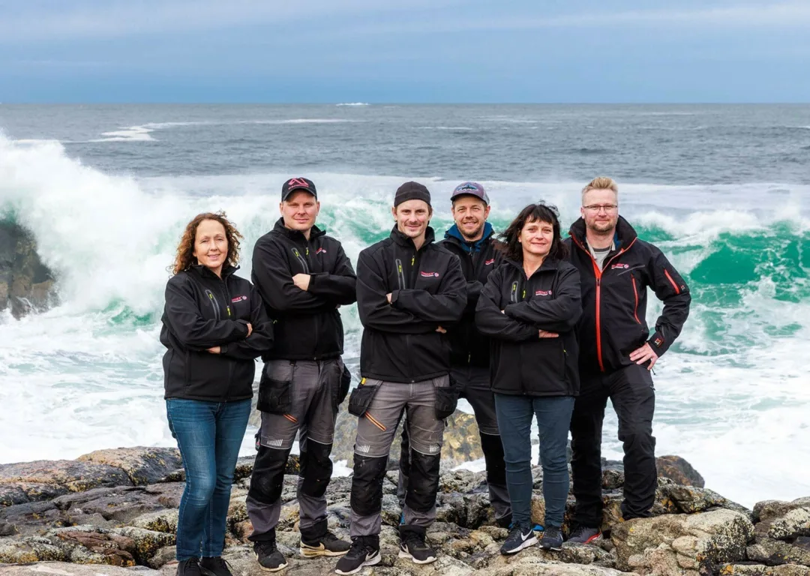

Om oss
Vi startet med sprosser i en garasje i Lillesand. I dag produserer vi i to fabrikker på Hustadvika, der vestavinden tester produktene for oss hver vinter.

Historien
Vindex AS ble etablert i Lillesand i 1986. Der ble det produsert sprosser i noen år, som en liten garasjebedrift. I 1992 fikk bedriften nye eiere og ble flyttet til Farstad, omtrent 45 km nord for Molde. Der holder vi til fremdeles.
Vi er den eneste produsenten av VINDEX-sprosser i vinyl. De mest kjente produktene våre er sprosser og skodder, gjerde og terrassegulv. I tillegg lager vi levegger, varmepumpehus, lufteskodder og postkassestativ. Alt er laget av vedlikeholdsfri PVC, og alt er norskprodusert. Vi har produksjon i to fabrikker.
Produksjon
Til forskjell fra andre aktører i det norske markedet produserer Vindex alle gjerdetypene i Norge. Produktene lages på CNC-fresemaskiner som er enkle å programmere, slik at vi kan tilpasse delene til dine mål — eller til et utseende du har sett for deg.
CNC-maskinene gir deler med stor nøyaktighet, og det er du som merker det: monteringen blir enkel når alt passer første gang. VINDEX-produktene lages i en spesiallaget produksjonsrobot, og alle deler kommer ut ferdige for sammenmontering, kontroll og forsendelse.
Dette er hele grunnen til at «skreddersydd» ikke bare er et ord hos oss. De fleste som selger PVC i Norge importerer ferdige moduler i faste lengder og kapper dem til. Vi programmerer maskinen.
Nær deg
Vindex har forhandlere og selgere over hele landet. Alle har gjennomgått opplæring hos oss, og er fabrikkens representant nær deg som kunde. Det betyr at du får en som kan produktet hjem på befaring — ikke en katalog i posten.
Vi gir 30 års garanti på våre ekstruderte PVC-produkter, og 5 år på LED-lys og glass. Se garanti og salgsbetingelser.
Snakk med oss
Fakta
Gratis rådgiving og befaring, og et forslag med tegning og pristilbud — helt uforpliktende.